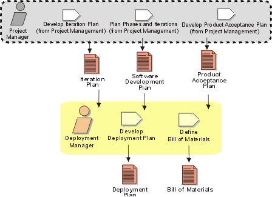

Disciplines >
Disciplines >
 Deployment >
Deployment >
 Workflow >
Plan Deployment
Workflow >
Plan Deployment
Disciplines >
Deployment >
Workflow >
Plan Deployment
Workflow Detail:
|
Topics
|
 |
The purpose of this workflow detail is to plan the product deployment. Deployment planning needs to take into account how and when the product will be available to the end user.
Deployment planning requires a high degree of customer collaboration and preparation. A successful conclusion to a software project can be severely impacted by factors outside the scope of software development such as the building, hardware infrastructure not being in place, and the staff being ill-prepared for cut-over to the new system.
To ensure successful deployment, and transition to the new system and ways of doing business, the Deployment Plan needs to address not only the deliverable software, but also the development of training material and system support material to ensure that end users can successfully use the delivered software product.
A deployment manager needs to be someone who is aware of the operational needs of the end user and capable of pulling together all the items that go into making the product. The deployment manager runs the beta test and, in the case of "shrink wrap" products, deals with the manufacturers to ensure that adequate quality is achieved in the product.
The deployment manager "gets the product out there" and, as such,
needs to be well versed in the required infrastructure, and user needs, to
ensure that the product is available for the users.
|
Rational Unified
Process
|